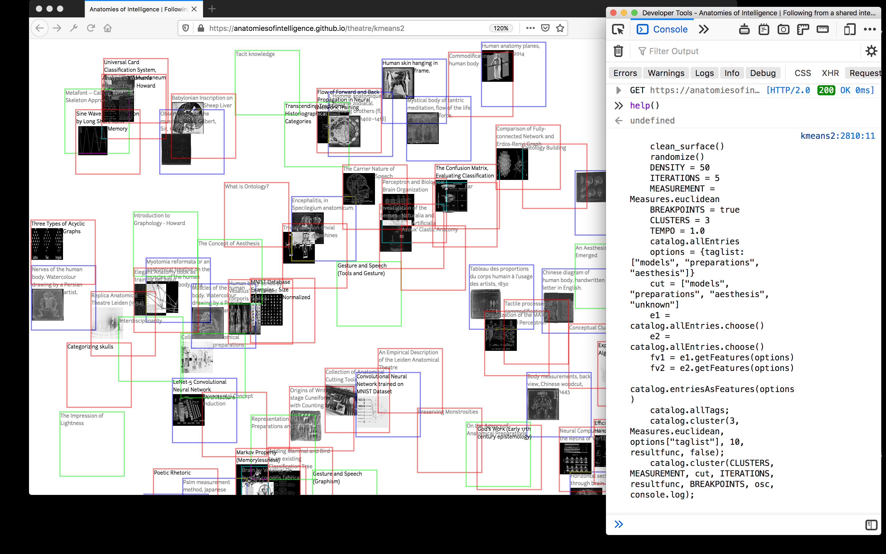

<html>
<head>
<meta content="text/html; charset=utf-8" http-equiv="content-type">

<!-- See: https://github.com/povdocs/webvr-starter-kit -->

<title>Anatomies of Intelligence</title>
<style type="text/css">
body{ margin: 5%; }
@font-face {
  font-family: Autopia-Italic;
  src: url(Autopia-Italic.ttf);
}
#thing1 {
	position: absolute;
	z-index: 100;
	display: inline;
	width: 500px;
	height: 500px;
	background-color: #9911FF;
}
#thing2 {
	position: absolute;
	z-index: 100;
	display: inline;
	width: 500px;
	height: 500px;

}
</style>

<script src="http://povdocs.github.io/webvr-starter-kit/build/vr.js"></script>

<body>

<!--
	<div id="thing1">Another Thing</div>

	<div id="thing2"></div>
-->

	<script>
		VR.floor(); //make a floor
		VR.torus().moveUp(1);
		VR.box().moveTo(-1, 1, -2);
	</script>


</body>

</html>
